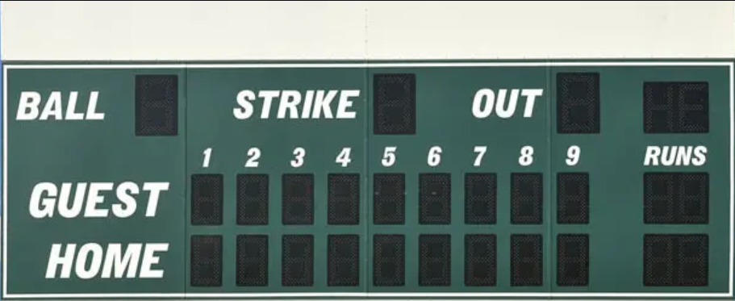

Baseball is played in periods of 8 innings with one team batting in one half and fielding in the other. The batting team will use bats and then get pitched (thrown at by the ball) at by the fielding team and try their best to hit it and run around the bases (once they do hit it), meanwhile the fielding team must get the ball and throw it back to the base the runner is about to get to before they do to get them out OR use the ball and tag them out.

Baseball is played between two teams of nine players each, divided into nine innings, with each inning having two halves: the top half (where the visiting team bats that is not from that location/area) and the bottom half (where the home team who is from that location/area bats).
Each player on both teams must have and are required to play with a mitt and bat. Some other optional gear you can have are sunglasses, hats, and sleeves. You may also note that baseball bats and mitts can be differently shaped, sized, and different in looks.
A run is scored when a player successfully touches all four bases (first base, second base, third base, and home plate) after hitting the ball. The team with the most runs at the end of the game wins.
The batting team attempts to hit the ball thrown by the pitcher and run around the bases. A player becomes a runner when they hit the ball and must touch each base in order.
A player can be put out in several ways, including:Striking out (three strikes). Being tagged out while running between bases. Catching a hit ball before it touches the ground (a flyout).
A batter gets four balls (pitches outside the strike zone) for a walk and three strikes (pitches within the strike zone) for a strikeout.
The defensive team aims to prevent runs by getting batters out. Players use gloves to catch the ball and must throw it to the appropriate base to tag out runners.